Internship report
2015 /Editorial Design /Master's Degree Work
Internship report with 6 months of work at Colönia Design Studio, a book created to finish my Master’s degree in Graphic Design and Editorial Projects at Faculty of Fine Arts, in Porto. All three books were sewn and bound manually by myself.
 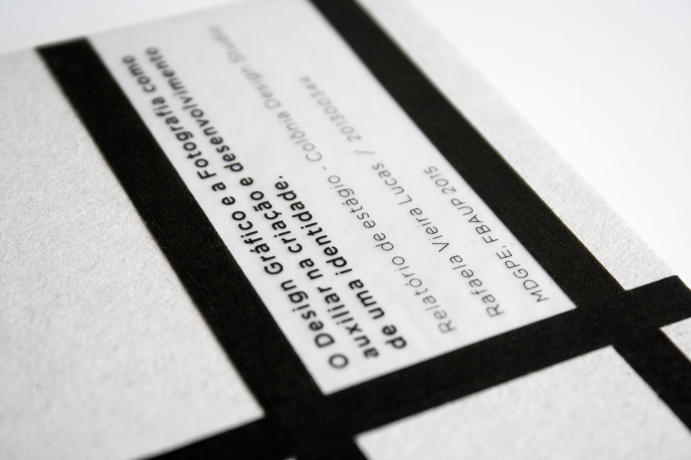
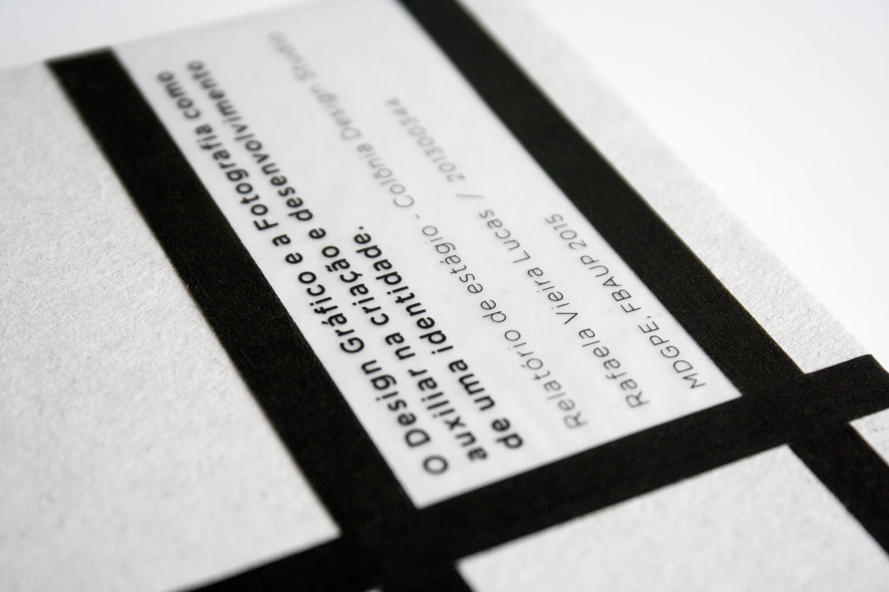


 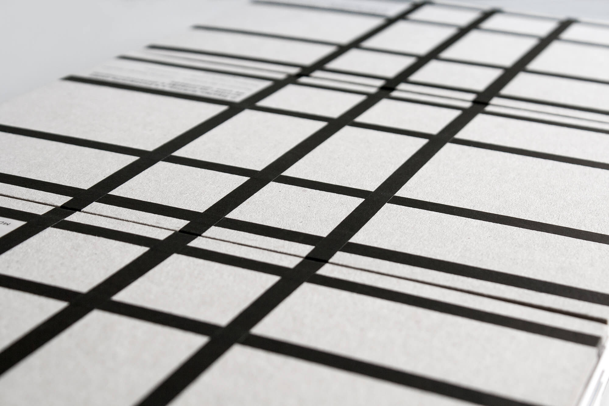
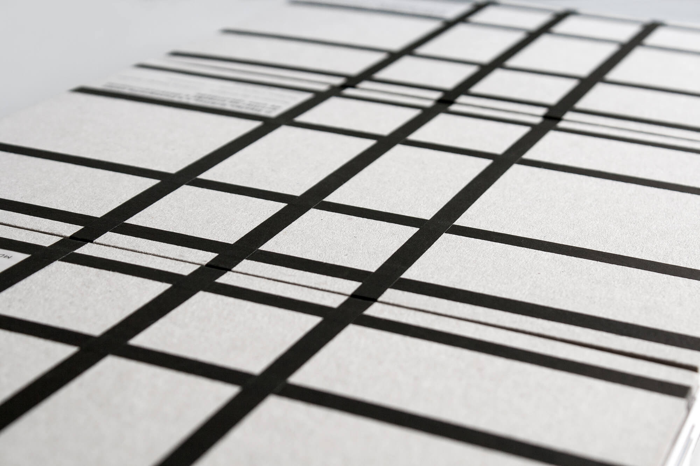


 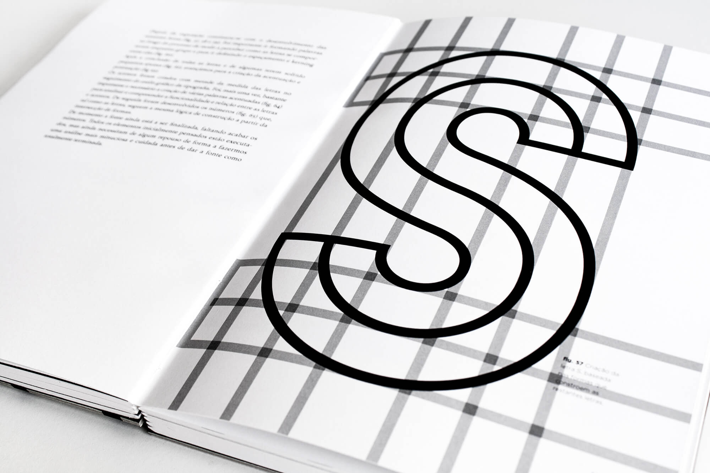
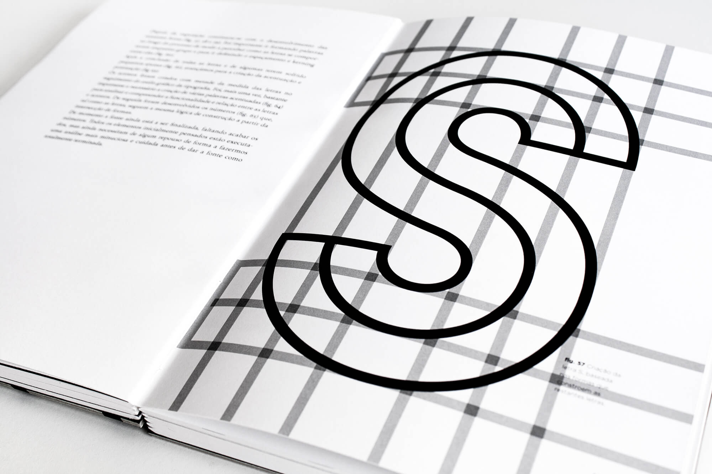
 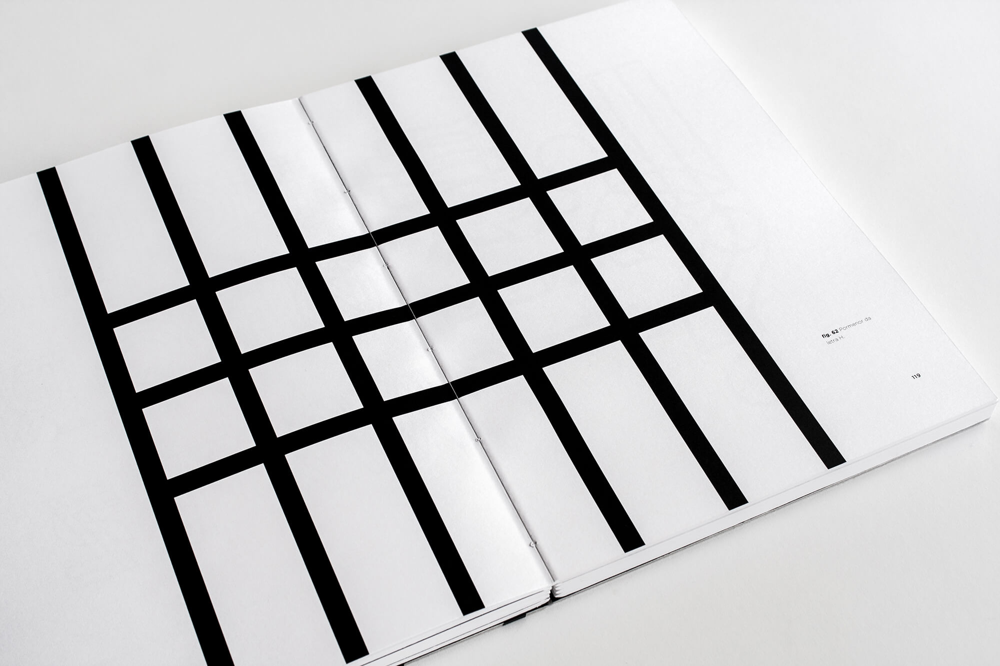
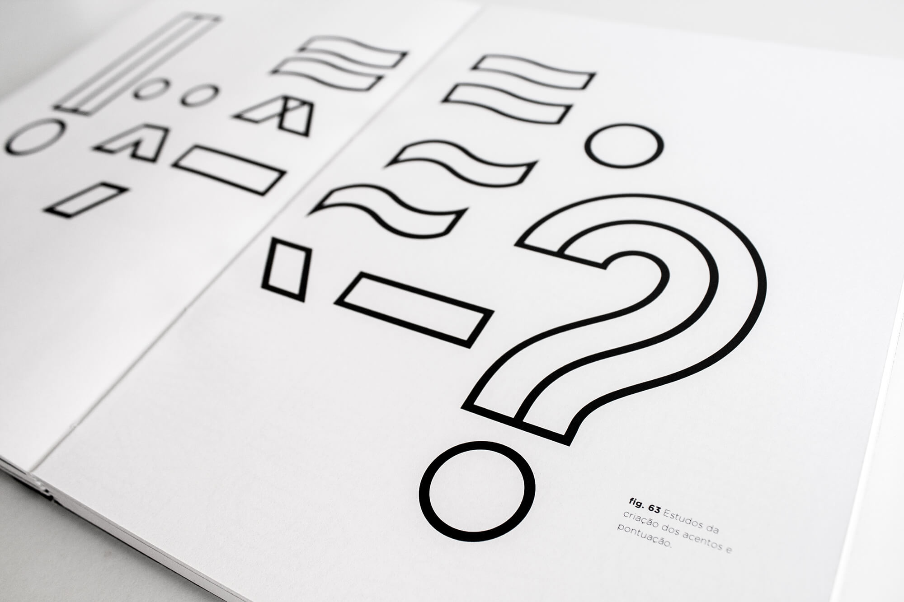
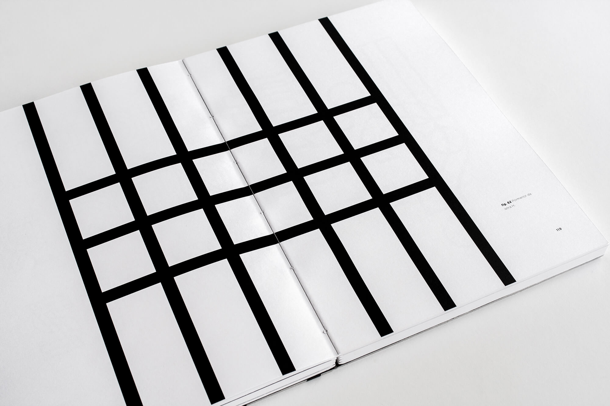
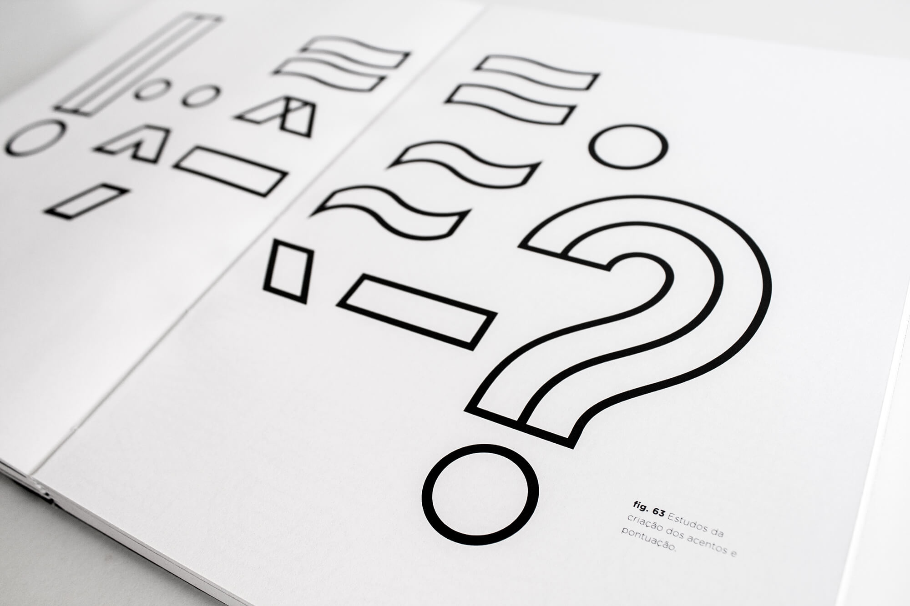


 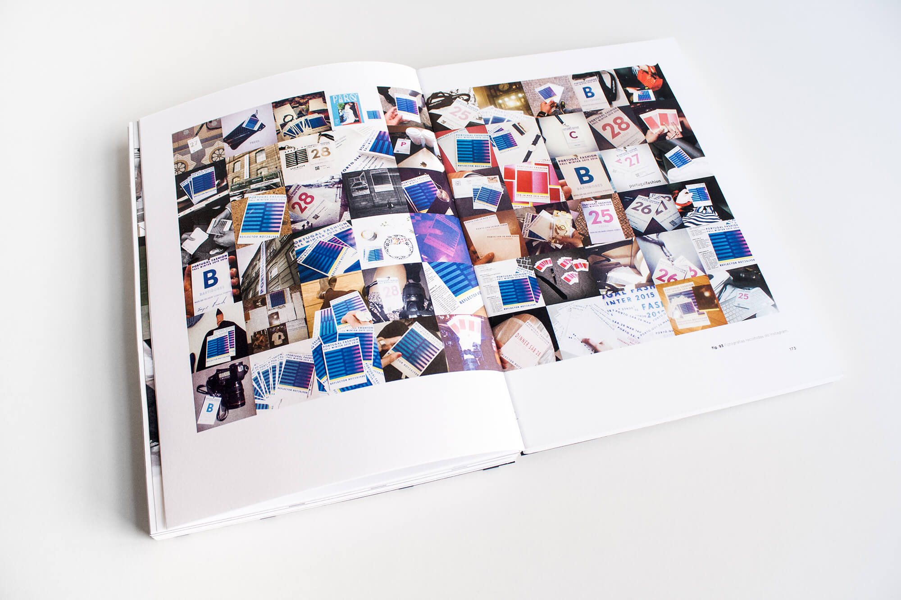
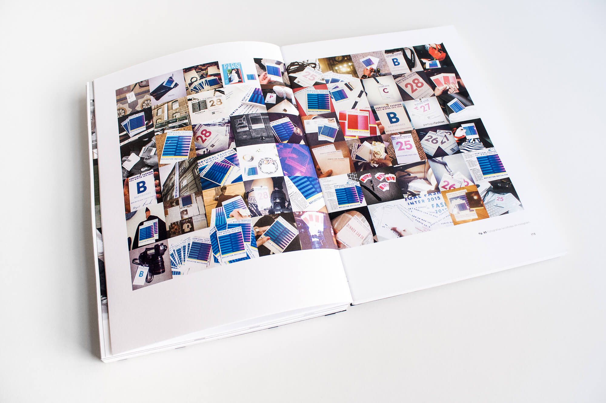


go back
back to top